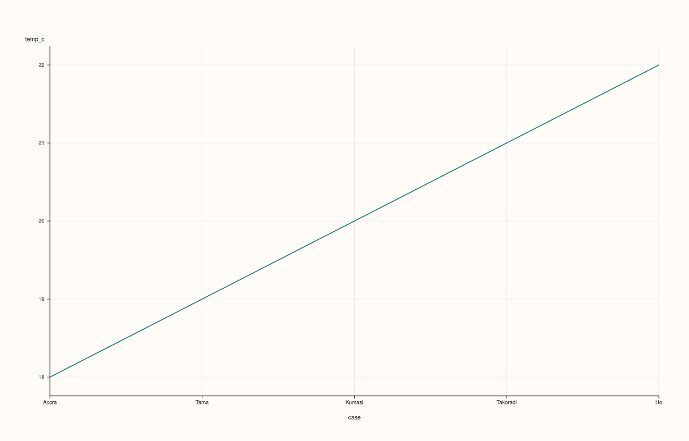
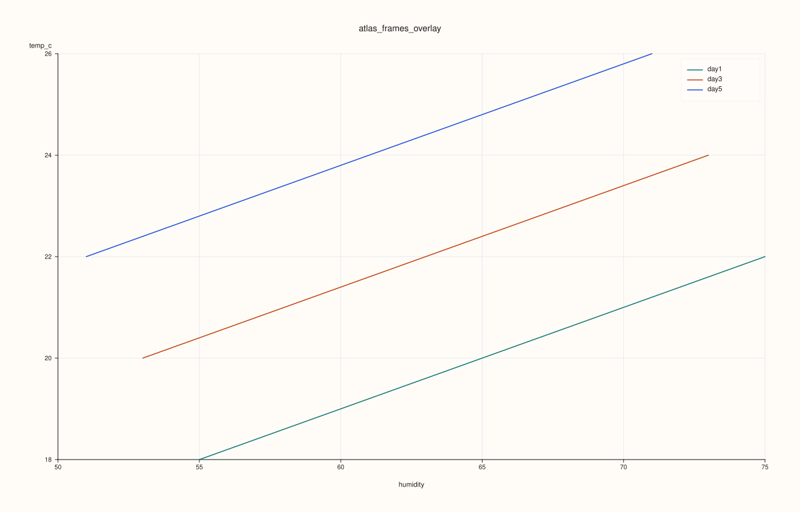
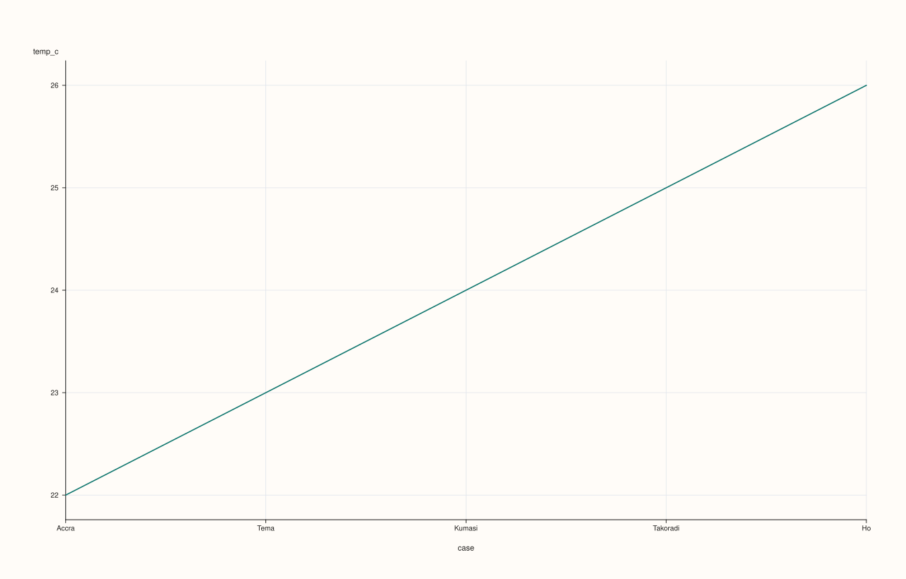
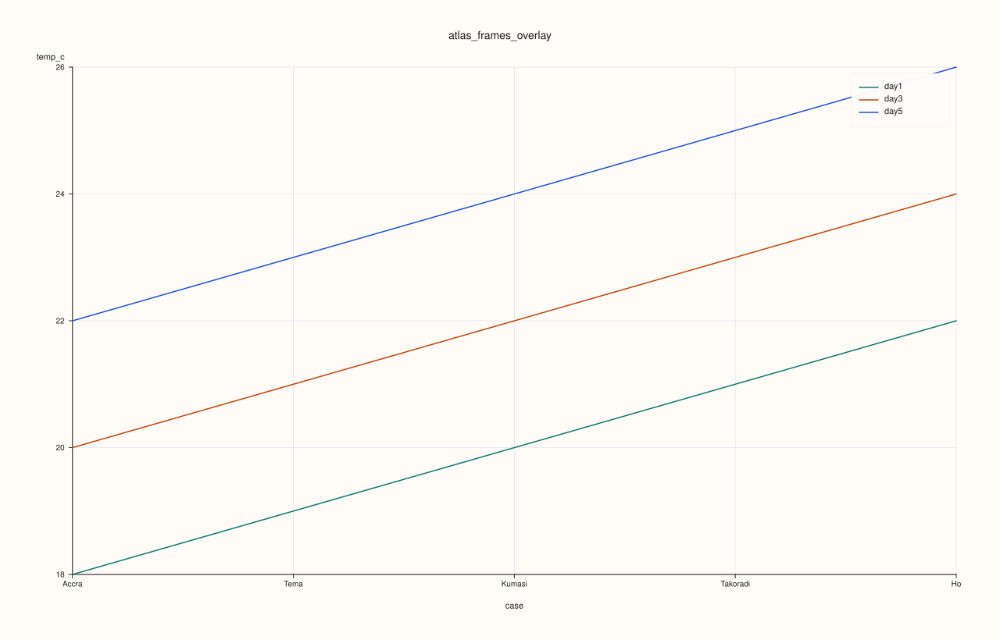

AtlasPlotAccessor::frames¶
Back to AtlasPlotAccessor API Reference
Signatures¶
DataFramePlotAccessor AtlasPlotAccessor::frames(std::int64_t frame_index = 0) const
pluss::pl::Studio AtlasPlotAccessor::frames(pluss::msharp::RangeView::Int frame_indices,
std::string_view y_feature,
std::optional<std::string_view> x_feature = std::nullopt) const
pluss::pl::Studio AtlasPlotAccessor::frames(pluss::msharp::RangeView::Int frame_indices,
std::string_view y_feature,
std::optional<std::string_view> x_feature,
const AtlasFramesPlotOptions& options) const
What It Does¶
Two genuinely different things share the name frames():
The single-index overload (
frames(frame_index)) is an entry point, not a chart builder — it returns aDataFramePlotAccessorbound to one frame of the stack, so you can call any of that accessor’s own plotting methods (.line(...),.scatter(...),.hist(...), etc.) on a single frame as if it were a standaloneDataFrame.The multi-index overloads (
frames(indices, y_feature, ...)) build an actualpluss::pl::Studiochart directly, overlaying (or faceting) the same feature across several frames at once, so you can compare howy_featurebehaves frame-to-frame.
Important
Returns a Studio, not printable output
Like every method on AtlasPlotAccessor, the multi-index overloads build and return a
pluss::pl::Studio — call .show()/.to_svg()/.save_svg(path)/etc. to view or persist it;
std::cout << chart does not compile. The single-index overload returns a
DataFramePlotAccessor instead — chain one of its own methods to get a Studio.
Parameters¶
frame_index (std::int64_t, single-index overload, defaults to 0)
The depth position to select. Negative values count from the end (-1 is the last frame).
Out of range throws.
frame_indices (pluss::msharp::RangeView::Int, multi-index overloads)
One or more depth positions to overlay/facet. Negative values count from the end. Duplicates
(after resolving negatives) are silently collapsed to one occurrence, in first-seen order.
Must select at least one frame.
y_feature (std::string_view, multi-index overloads)
The numeric feature to plot on the y-axis, read from every selected frame.
x_feature (std::optional<std::string_view>, defaults to std::nullopt)
The feature to plot on the x-axis. std::nullopt (the default) uses each frame’s own case
axis (row index or row label) instead of a data feature.
options (const AtlasFramesPlotOptions&)
mode (AtlasFrameSelectionMode, default Overlay): Overlay draws every selected frame as
its own line on one pane; Facet draws each in its own small-multiple pane. rows/cols
(facet grid shape, 0 auto-sizes), grid_gap_x/grid_gap_y, show_grid, line_width.
Returns¶
DataFramePlotAccessor (single-index overload)
An accessor bound to one frame — chain any DataFramePlotAccessor method to get a Studio.
pluss::pl::Studio (multi-index overloads)
A figure overlaying (or faceting) y_feature across the selected frames.
Examples¶
Example 1. The single-index entry point: select frame 0 and chain a line plot on one of its
own features.
using namespace pluss::table;
std::vector<DataFrame> frames;
std::vector<std::string> cities = {"Accra", "Tema", "Kumasi", "Takoradi", "Ho"};
for (int i = 0; i < 5; ++i) {
double base = static_cast<double>(i);
frames.push_back(DataFrame({
{"temp_c", Thread(pluss::make_series({18.0 + base, 19.0 + base, 20.0 + base, 21.0 + base, 22.0 + base}))},
{"humidity", Thread(pluss::make_series({55.0 - base, 60.0 - base, 65.0 - base, 70.0 - base, 75.0 - base}))},
}, Thread(pluss::make_note(cities))));
}
auto atlas = Atlas(frames, Thread(pluss::make_note({"day1", "day2", "day3", "day4", "day5"})));
auto chart = atlas.plot().frames(0).line("temp_c");
chart.show();

The plotted line is frame 0’s own temp_c values against its own case labels — this is exactly
atlas.registry(...)-style single-frame access wired straight into DataFramePlotAccessor, not a
depth-aware chart.
Example 2. Multi-index overlay: compare temp_c across three frames (0, 2, 4), x-axis
defaulting to the case axis.
using namespace pluss::table;
std::vector<DataFrame> frames;
std::vector<std::string> cities = {"Accra", "Tema", "Kumasi", "Takoradi", "Ho"};
for (int i = 0; i < 5; ++i) {
double base = static_cast<double>(i);
frames.push_back(DataFrame({
{"temp_c", Thread(pluss::make_series({18.0 + base, 19.0 + base, 20.0 + base, 21.0 + base, 22.0 + base}))},
{"humidity", Thread(pluss::make_series({55.0 - base, 60.0 - base, 65.0 - base, 70.0 - base, 75.0 - base}))},
}, Thread(pluss::make_note(cities))));
}
auto atlas = Atlas(frames, Thread(pluss::make_note({"day1", "day2", "day3", "day4", "day5"})));
auto chart = atlas.plot().frames(pluss::msharp::RangeView::Int{0, 2, 4}, "temp_c");
chart.show();

Each selected frame becomes its own labeled line ("day1", "day3", "day5", from
depth_labels()), all sharing the same case-axis x-values.
Example 3. Multi-index overlay with an explicit x_feature — plot temp_c against humidity
instead of the case axis.
using namespace pluss::table;
std::vector<DataFrame> frames;
std::vector<std::string> cities = {"Accra", "Tema", "Kumasi", "Takoradi", "Ho"};
for (int i = 0; i < 5; ++i) {
double base = static_cast<double>(i);
frames.push_back(DataFrame({
{"temp_c", Thread(pluss::make_series({18.0 + base, 19.0 + base, 20.0 + base, 21.0 + base, 22.0 + base}))},
{"humidity", Thread(pluss::make_series({55.0 - base, 60.0 - base, 65.0 - base, 70.0 - base, 75.0 - base}))},
}, Thread(pluss::make_note(cities))));
}
auto atlas = Atlas(frames, Thread(pluss::make_note({"day1", "day2", "day3", "day4", "day5"})));
auto chart = atlas.plot().frames(pluss::msharp::RangeView::Int{0, 2, 4}, "temp_c", "humidity");
chart.show();

Example 4. Multi-index with explicit options: Facet mode gives each selected frame its own
small-multiple pane instead of overlaying them.
using namespace pluss::table;
std::vector<DataFrame> frames;
std::vector<std::string> cities = {"Accra", "Tema", "Kumasi", "Takoradi", "Ho"};
for (int i = 0; i < 5; ++i) {
double base = static_cast<double>(i);
frames.push_back(DataFrame({
{"temp_c", Thread(pluss::make_series({18.0 + base, 19.0 + base, 20.0 + base, 21.0 + base, 22.0 + base}))},
{"humidity", Thread(pluss::make_series({55.0 - base, 60.0 - base, 65.0 - base, 70.0 - base, 75.0 - base}))},
}, Thread(pluss::make_note(cities))));
}
auto atlas = Atlas(frames, Thread(pluss::make_note({"day1", "day2", "day3", "day4", "day5"})));
AtlasFramesPlotOptions options;
options.mode = AtlasFrameSelectionMode::Facet;
options.rows = 1;
options.cols = 3;
auto chart = atlas.plot().frames(pluss::msharp::RangeView::Int{0, 2, 4}, "temp_c", std::nullopt, options);
chart.show();

Example 5. A negative frame_index on the single-index overload counts from the end — -1 is
frame 4, the last one.
using namespace pluss::table;
std::vector<DataFrame> frames;
std::vector<std::string> cities = {"Accra", "Tema", "Kumasi", "Takoradi", "Ho"};
for (int i = 0; i < 5; ++i) {
double base = static_cast<double>(i);
frames.push_back(DataFrame({
{"temp_c", Thread(pluss::make_series({18.0 + base, 19.0 + base, 20.0 + base, 21.0 + base, 22.0 + base}))},
}, Thread(pluss::make_note(cities))));
}
auto atlas = Atlas(frames, Thread(pluss::make_note({"day1", "day2", "day3", "day4", "day5"})));
auto chart = atlas.plot().frames(-1).line("temp_c");
chart.show();

Example 6. An out-of-range frame_index throws.
using namespace pluss::table;
std::vector<DataFrame> frames;
for (int i = 0; i < 5; ++i) {
frames.push_back(DataFrame({
{"temp_c", Thread(pluss::make_series({18.0, 19.0, 20.0, 21.0, 22.0}))},
}));
}
auto atlas = Atlas(frames);
try {
auto accessor = atlas.plot().frames(99);
} catch (const std::exception& e) {
std::string msg(e.what());
std::cout << msg.substr(0, msg.find('\n'));
}
Output¶
Atlas::plot().frames: frame index out of bounds
Example 7. Duplicate indices in the multi-index overloads collapse to one occurrence each,
in first-seen order — {0, 0, 2, 2, 4} behaves identically to {0, 2, 4}.
using namespace pluss::table;
std::vector<DataFrame> frames;
std::vector<std::string> cities = {"Accra", "Tema", "Kumasi", "Takoradi", "Ho"};
for (int i = 0; i < 5; ++i) {
double base = static_cast<double>(i);
frames.push_back(DataFrame({
{"temp_c", Thread(pluss::make_series({18.0 + base, 19.0 + base, 20.0 + base, 21.0 + base, 22.0 + base}))},
}, Thread(pluss::make_note(cities))));
}
auto atlas = Atlas(frames, Thread(pluss::make_note({"day1", "day2", "day3", "day4", "day5"})));
auto chart = atlas.plot().frames(pluss::msharp::RangeView::Int{0, 0, 2, 2, 4}, "temp_c");
chart.show();

Notes¶
Both
frame_index(single overload) and every value inframe_indices(multi overloads) support Python-style negative indexing counting from the end of the depth stack.The multi-index overloads require
y_feature(andx_feature, if given) to exist in every selected frame — a missing feature in any one of them throws.x_feature = std::nullopt(the default) uses each frame’s own case axis — its row index, or its row labels if the frame was built withNote/Timeline/TimeIndex-kind case labels.Requires the atlas to have at least one frame — an empty atlas throws
"Atlas::plot().frames: atlas has no frames".
See Also¶
DataFramePlotAccessorAPI Reference: every method available on the accessor returned by the single-index overload.AtlasPlotAccessor::depth_compare: compares features across depth rather than frames against each other.Atlas::plot: the entry point this accessor is reached from.